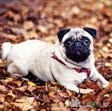
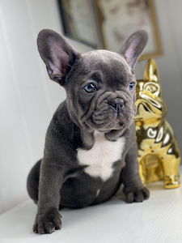
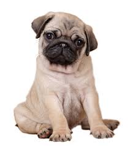

Мопсы относятся к декоративным породам и принадлежат к группе собак-компаньонов. Собаки с уравновешенным и спокойным характером подходят для жизни в городе, преданы хозяину и хорошо уживаются с детьми. Мопсы не требуют особого ухода, поэтому их рекомендуется заводит владельцам без опыта содержания собак.
Терьерный тип
Бульдожий тип
Шарпейный тип
